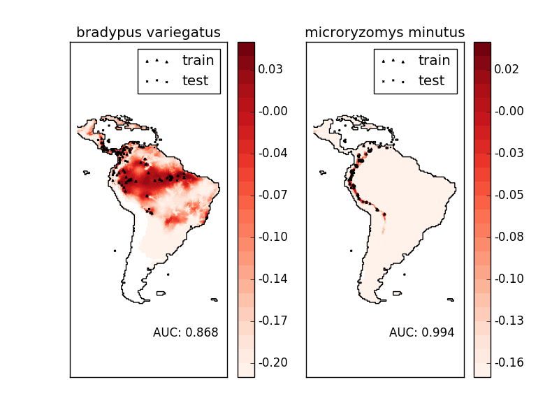

Species distribution modeling¶
Modeling species’ geographic distributions is an important problem in conservation biology. In this example we model the geographic distribution of two south american mammals given past observations and 14 environmental variables. Since we have only positive examples (there are no unsuccessful observations), we cast this problem as a density estimation problem and use the OneClassSVM provided by the package sklearn.svm as our modeling tool. The dataset is provided by Phillips et. al. (2006). If available, the example uses basemap to plot the coast lines and national boundaries of South America.
The two species are:
- “Bradypus variegatus” , the Brown-throated Sloth.
- “Microryzomys minutus” , also known as the Forest Small Rice Rat, a rodent that lives in Peru, Colombia, Ecuador, Peru, and Venezuela.
References¶

- “Maximum entropy modeling of species geographic distributions” S. J. Phillips, R. P. Anderson, R. E. Schapire - Ecological Modelling, 190:231-259, 2006.
Script output:
Downloading species data from http://www.cs.princeton.edu/~schapire/maxent/datasets/samples.zip to /home/travis/scikit_learn_data
Downloading coverage data from http://www.cs.princeton.edu/~schapire/maxent/datasets/coverages.zip to /home/travis/scikit_learn_data
(' - converting', 'coverages/cld6190_ann.asc')
(' - converting', 'coverages/dtr6190_ann.asc')
(' - converting', 'coverages/ecoreg.asc')
(' - converting', 'coverages/frs6190_ann.asc')
(' - converting', 'coverages/h_dem.asc')
(' - converting', 'coverages/pre6190_ann.asc')
(' - converting', 'coverages/pre6190_l1.asc')
(' - converting', 'coverages/pre6190_l10.asc')
(' - converting', 'coverages/pre6190_l4.asc')
(' - converting', 'coverages/pre6190_l7.asc')
(' - converting', 'coverages/tmn6190_ann.asc')
(' - converting', 'coverages/tmp6190_ann.asc')
(' - converting', 'coverages/tmx6190_ann.asc')
(' - converting', 'coverages/vap6190_ann.asc')
________________________________________________________________________________
Modeling distribution of species 'bradypus variegatus'
- fit OneClassSVM ... done.
- plot coastlines from coverage
- predict species distribution
Area under the ROC curve : 0.868443
________________________________________________________________________________
Modeling distribution of species 'microryzomys minutus'
- fit OneClassSVM ... done.
- plot coastlines from coverage
- predict species distribution
Area under the ROC curve : 0.993919
time elapsed: 32.55s
Python source code: plot_species_distribution_modeling.py
# Authors: Peter Prettenhofer <peter.prettenhofer@gmail.com>
# Jake Vanderplas <vanderplas@astro.washington.edu>
#
# License: BSD 3 clause
from __future__ import print_function
from time import time
import numpy as np
import matplotlib.pyplot as plt
from sklearn.datasets.base import Bunch
from sklearn.datasets import fetch_species_distributions
from sklearn.datasets.species_distributions import construct_grids
from sklearn import svm, metrics
# if basemap is available, we'll use it.
# otherwise, we'll improvise later...
try:
from mpl_toolkits.basemap import Basemap
basemap = True
except ImportError:
basemap = False
print(__doc__)
def create_species_bunch(species_name, train, test, coverages, xgrid, ygrid):
"""Create a bunch with information about a particular organism
This will use the test/train record arrays to extract the
data specific to the given species name.
"""
bunch = Bunch(name=' '.join(species_name.split("_")[:2]))
species_name = species_name.encode('ascii')
points = dict(test=test, train=train)
for label, pts in points.items():
# choose points associated with the desired species
pts = pts[pts['species'] == species_name]
bunch['pts_%s' % label] = pts
# determine coverage values for each of the training & testing points
ix = np.searchsorted(xgrid, pts['dd long'])
iy = np.searchsorted(ygrid, pts['dd lat'])
bunch['cov_%s' % label] = coverages[:, -iy, ix].T
return bunch
def plot_species_distribution(species=("bradypus_variegatus_0",
"microryzomys_minutus_0")):
"""
Plot the species distribution.
"""
if len(species) > 2:
print("Note: when more than two species are provided,"
" only the first two will be used")
t0 = time()
# Load the compressed data
data = fetch_species_distributions()
# Set up the data grid
xgrid, ygrid = construct_grids(data)
# The grid in x,y coordinates
X, Y = np.meshgrid(xgrid, ygrid[::-1])
# create a bunch for each species
BV_bunch = create_species_bunch(species[0],
data.train, data.test,
data.coverages, xgrid, ygrid)
MM_bunch = create_species_bunch(species[1],
data.train, data.test,
data.coverages, xgrid, ygrid)
# background points (grid coordinates) for evaluation
np.random.seed(13)
background_points = np.c_[np.random.randint(low=0, high=data.Ny,
size=10000),
np.random.randint(low=0, high=data.Nx,
size=10000)].T
# We'll make use of the fact that coverages[6] has measurements at all
# land points. This will help us decide between land and water.
land_reference = data.coverages[6]
# Fit, predict, and plot for each species.
for i, species in enumerate([BV_bunch, MM_bunch]):
print("_" * 80)
print("Modeling distribution of species '%s'" % species.name)
# Standardize features
mean = species.cov_train.mean(axis=0)
std = species.cov_train.std(axis=0)
train_cover_std = (species.cov_train - mean) / std
# Fit OneClassSVM
print(" - fit OneClassSVM ... ", end='')
clf = svm.OneClassSVM(nu=0.1, kernel="rbf", gamma=0.5)
clf.fit(train_cover_std)
print("done.")
# Plot map of South America
plt.subplot(1, 2, i + 1)
if basemap:
print(" - plot coastlines using basemap")
m = Basemap(projection='cyl', llcrnrlat=Y.min(),
urcrnrlat=Y.max(), llcrnrlon=X.min(),
urcrnrlon=X.max(), resolution='c')
m.drawcoastlines()
m.drawcountries()
else:
print(" - plot coastlines from coverage")
plt.contour(X, Y, land_reference,
levels=[-9999], colors="k",
linestyles="solid")
plt.xticks([])
plt.yticks([])
print(" - predict species distribution")
# Predict species distribution using the training data
Z = np.ones((data.Ny, data.Nx), dtype=np.float64)
# We'll predict only for the land points.
idx = np.where(land_reference > -9999)
coverages_land = data.coverages[:, idx[0], idx[1]].T
pred = clf.decision_function((coverages_land - mean) / std)[:, 0]
Z *= pred.min()
Z[idx[0], idx[1]] = pred
levels = np.linspace(Z.min(), Z.max(), 25)
Z[land_reference == -9999] = -9999
# plot contours of the prediction
plt.contourf(X, Y, Z, levels=levels, cmap=plt.cm.Reds)
plt.colorbar(format='%.2f')
# scatter training/testing points
plt.scatter(species.pts_train['dd long'], species.pts_train['dd lat'],
s=2 ** 2, c='black',
marker='^', label='train')
plt.scatter(species.pts_test['dd long'], species.pts_test['dd lat'],
s=2 ** 2, c='black',
marker='x', label='test')
plt.legend()
plt.title(species.name)
plt.axis('equal')
# Compute AUC with regards to background points
pred_background = Z[background_points[0], background_points[1]]
pred_test = clf.decision_function((species.cov_test - mean)
/ std)[:, 0]
scores = np.r_[pred_test, pred_background]
y = np.r_[np.ones(pred_test.shape), np.zeros(pred_background.shape)]
fpr, tpr, thresholds = metrics.roc_curve(y, scores)
roc_auc = metrics.auc(fpr, tpr)
plt.text(-35, -70, "AUC: %.3f" % roc_auc, ha="right")
print("\n Area under the ROC curve : %f" % roc_auc)
print("\ntime elapsed: %.2fs" % (time() - t0))
plot_species_distribution()
plt.show()
Total running time of the example: 32.55 seconds ( 0 minutes 32.55 seconds)